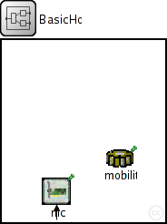

This documentation is released under the Creative Commons license
This documentation is released under the Creative Commons licenseThe BasicHost is a compound module that implements a very simple host. It only consists of basic modules and is the most basic host you can create for the MF
Author: Daniel Willkomm
The following diagram shows usage relationships between types. Unresolved types are missing from the diagram. Click here to see the full picture.
The following diagram shows inheritance relationships for this type. Unresolved types are missing from the diagram. Click here to see the full picture.
| Name | Type | Description |
|---|---|---|
| TestNode | compound module |
Basis definition for all test nodes. |
| Name | Type | Description |
|---|---|---|
| ConnectionManagerTestNet | network |
Test network for ConnectionManager. Author: Karl Wessel |
| Name | Type | Default value | Description |
|---|---|---|---|
| numHosts | double |
total number of hosts in the network |
|
| phyLayer | string |
physical layer type |
| Name | Value | Description |
|---|---|---|
| display | bgb=180,200,white,,;bgp=10,10 |
| Name | Direction | Size | Description |
|---|---|---|---|
| radioIn | input |
| Name | Type | Default value | Description |
|---|---|---|---|
| mobility.notAffectedByHostState | bool | true | |
| mobility.coreDebug | bool | false |
debug switch for the core framework |
| mobility.constraintAreaMinX | double | -1m/0 |
min x position of the constraint area, unconstrained by default (negative infinity) |
| mobility.constraintAreaMinY | double | -1m/0 |
min y position of the constraint area, unconstrained by default (negative infinity) |
| mobility.constraintAreaMinZ | double | -1m/0 |
min z position of the constraint area, unconstrained by default (negative infinity) |
| mobility.constraintAreaMaxX | double | 1m/0 |
max x position of the constraint area, unconstrained by default (positive infinity) |
| mobility.constraintAreaMaxY | double | 1m/0 |
max y position of the constraint area, unconstrained by default (positive infinity) |
| mobility.constraintAreaMaxZ | double | 1m/0 |
max z position of the constraint area, unconstrained by default (positive infinity) |
| mobility.initialX | double | uniform(constraintAreaMinX, constraintAreaMaxX) |
initial x coordinate of the nodes' position |
| mobility.initialY | double | uniform(constraintAreaMinY, constraintAreaMaxY) |
initial y coordinate of the nodes' position |
| mobility.initialZ | double | uniform(constraintAreaMinZ, constraintAreaMaxZ) |
initial z coordinate of the nodes' position |
| mobility.initFromDisplayString | bool | false |
initial position will be read from display string |
| nic.phy.usePropagationDelay | bool |
Should transmission delay be simulated? |
// The BasicHost is a compound module that implements a very // simple host. It only consists of basic modules and is the // most basic host you can create for the MF // // @author Daniel Willkomm module BasicHost extends TestNode { parameters: double numHosts; // total number of hosts in the network string phyLayer; //physical layer type @display("bgb=180,200,white,,;bgp=10,10"); gates: input radioIn; submodules: mobility: StationaryMobility { parameters: @display("p=130,130;i=cogwheel2"); } nic: TestNic { parameters: phyLayerType = phyLayer; @display("b=32,30;p=60,166;i=iface"); } connections: radioIn --> nic.radioIn; }
This documentation is released under the Creative Commons license